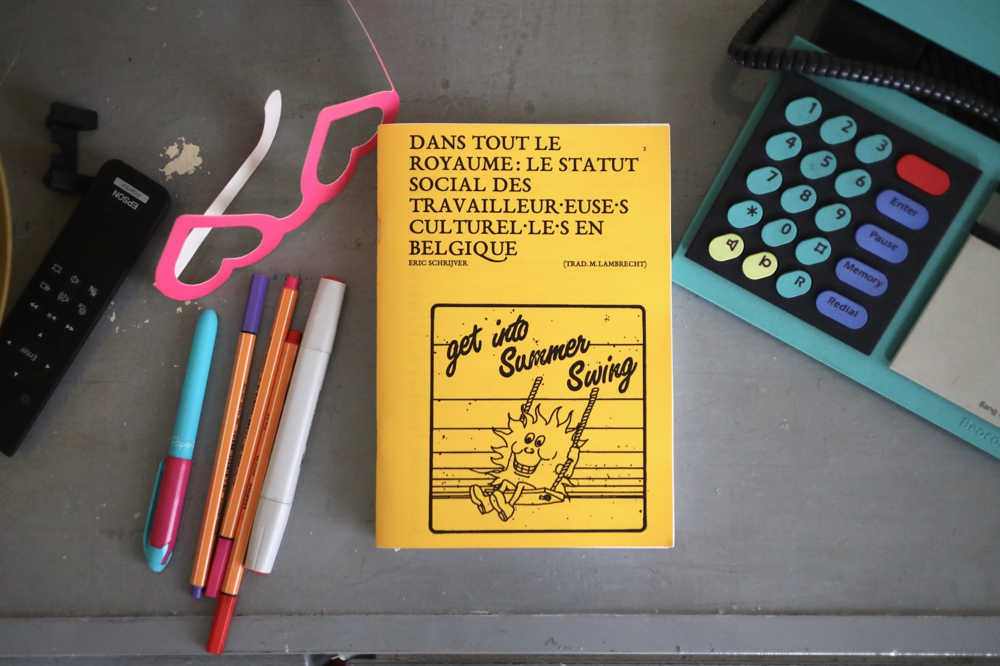
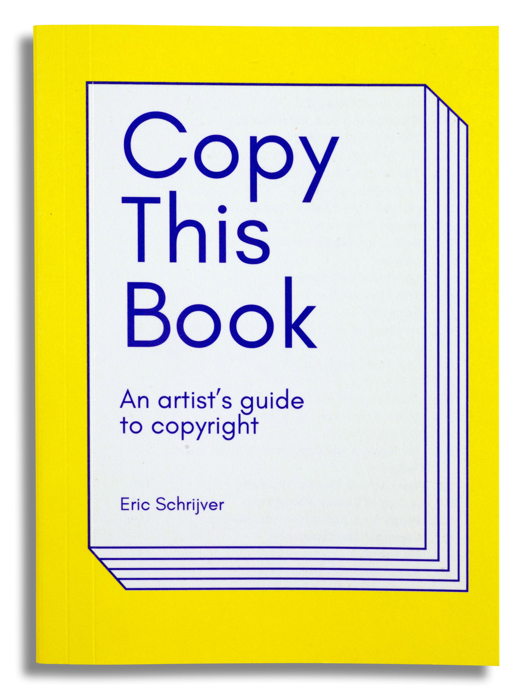
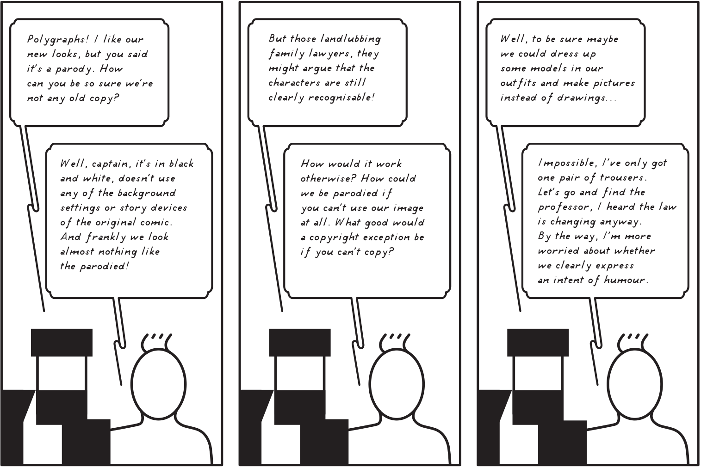

Copiez ce livre – Un manuel sur le droit d'auteur et les communs culturels, par et pour les artistes, 2023
Pre-order @ Les presses du réel:
Recent projects:
Dans tout le royaume : le statut social des travailleur·euse·s culturel·le·s en Belgique, 2022
Copy This Book an artist’s guide to copyright, 2018
Legal Advice for Artists an irreverent guide to copyright, 2016
Design the Public Domain, workshop and website, 2016

Collaborative Open Source Type Design, workshop and website, 2015

Up Pen Down, workshop and website, 2013